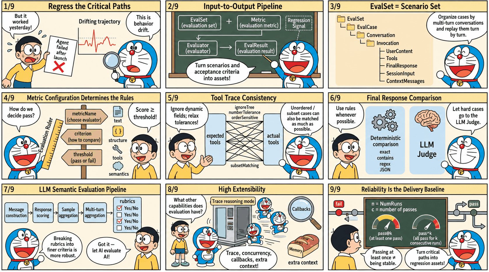

tRPC-Agent-Go: A Complete Guide to AI Agent Automated Evaluation Paradigms and Engineering Practice
When Agents enter business-critical paths, the most dangerous issue is often not an obvious failure, but behavior drift that is hard to notice. One correct output cannot prove that the next version will still be reliable. Fine-tuning a model or prompt, updating tools or knowledge bases, and adjusting orchestration logic can all change key decisions and output forms without warning. Evaluation needs to solidify key scenarios and acceptance criteria into reproducible regression signals, so issues are exposed and locatable before release. This article focuses on tRPC-Agent-Go evaluation capabilities. Starting from a minimal runnable example, it introduces how to organize evaluation assets with evaluation sets and metrics, persist results, choose between deterministic evaluation and LLM Judge semantic evaluation, and apply engineering integration practices that bring regression validation into local debugging and pipeline regression.
tRPC-Agent-Go is an autonomous multi-Agent framework for Go. It provides tool calling, session and memory management, artifact management, multi-Agent collaboration, graph orchestration, knowledge bases, observability, and more. tRPC-Agent-Go grows with community support. Stars are welcome.
tRPC-Agent-Go builds a complete automated evaluation system around evaluation sets and metrics. It unifies multi-turn conversations, tool calls, and final outputs into a repeatable evaluation process, and produces structured evaluation results to support regression validation. The framework integrates multiple metric types, including deterministic static evaluation, LLM Judge semantic evaluation, and rubric-based evaluation. Together with concurrent inference, Trace mode, callbacks, and context injection, it aims to provide end-to-end support from Agent development to regression testing, helping developers predict and catch potential behavior drift during version iteration.

Background
As large-model capabilities and tool ecosystems mature, Agent systems are moving from experimental scenarios into business-critical paths. Release cadence keeps increasing, but delivery quality no longer depends on one correct demo output. It depends on stability and regressibility while models, prompts, tools, knowledge bases, and orchestration continue to evolve. During version iteration, key behaviors can drift subtly, such as changes in tool selection, parameter structures, or output forms. Stable regression is therefore an urgent problem to solve.
Unlike deterministic systems, Agent system issues usually appear as probabilistic deviations. Reproduction and replay are difficult, and diagnosis must cross logs, traces, and external dependencies, which significantly increases the cost of closing the loop.
The core purpose of evaluation is to turn key scenarios and acceptance criteria into assets and preserve them as sustainable regression signals. tRPC-Agent-Go provides out-of-the-box evaluation capabilities. It supports asset management and result persistence based on evaluation sets and metrics, includes static evaluators and LLM Judge evaluators, and provides multi-turn conversation evaluation, repeated runs, Trace evaluation mode, callbacks, context injection, and concurrent inference, supporting engineering integration for local debugging and pipeline regression.
Quick Start
This section provides a minimal example to help you quickly understand how to use tRPC-Agent-Go evaluation.
This example uses local file evaluation. The complete code is at examples/evaluation/local. The framework also provides an in-memory evaluation implementation. See examples/evaluation/inmemory for the complete example.
Environment Setup
- Go 1.24+
- Accessible LLM model service
Configure the model service environment variables before running.
Code Example
Two core code snippets are provided below, one for building the Agent and one for running the evaluation.
Agent Snippet
This snippet builds a minimal evaluable Agent. It mounts a function tool named calculator through llmagent and uses instruction to require every math question to use tool calls, making tool traces stable and easy to align during evaluation.
Evaluation Snippet
This snippet creates a runnable Runner from the Agent, configures three local Managers to read the evaluation set EvalSet and evaluation metric Metric and write result files, then creates an AgentEvaluator through evaluation.New and calls Evaluate to run the specified evaluation set.
Evaluation Files
Evaluation files include an evaluation set file and an evaluation metric file. They are organized as follows.
Evaluation Set File
The evaluation set file path is data/math-eval-app/math-basic.evalset.json, which holds evaluation cases. During inference, cases are traversed by evalCases, and each case's conversation is traversed turn by turn, using userContent as input.
The following evaluation set file example defines an evaluation set named math-basic. During evaluation, evalSetId selects the set to run, and evalCases holds the list of cases. This example has only one case, calc_add. During inference, a session is created from sessionInput, and inference then runs in the order of conversation. This example has only one turn, calc_add-1, whose input comes from userContent, asking the Agent to process calc add 2 3. This case selects the tool trajectory evaluator, so the expected tool trace is written in tools. It expresses a concrete requirement: the Agent needs to call a tool named calculator, the arguments are addition and two operands, and the tool result must also match. Tool id is usually generated at runtime and is not used for matching.
Evaluation Metric File
The evaluation metric file path is data/math-eval-app/math-basic.metrics.json, which describes evaluation metrics. It selects the evaluator by metricName, describes criteria with criterion, and defines the threshold with threshold. A single file can configure multiple metrics, and the framework executes them in order.
This section configures only the tool trajectory evaluator tool_trajectory_avg_score, comparing tool traces for each turn. Tool id is usually generated at runtime and is not used for matching.
This metric compares tool calls turn by turn. If the tool name, arguments, and result all match, the score is 1. If they do not match, the score is 0. The total score is the average across turns, and then it is compared with threshold to determine pass or fail. When threshold is set to 1.0, every turn must match.
Run Evaluation
When running evaluation, the framework reads the evaluation set file and evaluation metric file, calls the Runner and captures responses and tool calls during inference, then completes scoring according to the evaluation metrics and writes the evaluation result file.
View Evaluation Results
Results are written to output/math-eval-app/, with filenames like math-eval-app_math-basic_<uuid>.evalset_result.json.
The result file retains both actual and expected traces. As long as the tool trace meets the metric requirements, the evaluation result is marked as passed.
Core Concepts
As shown below, the framework standardizes the Agent runtime process through a unified evaluation flow. Evaluation input consists of the evaluation set EvalSet and evaluation metric Metric, and evaluation output is the evaluation result EvalResult.

- Evaluation Set EvalSet describes the scenarios covered by evaluation and provides evaluation input. Each case organizes Invocation by turn and contains user input plus expected
toolstraces orfinalResponse. - Evaluation Metric Metric defines evaluation metric configuration, including
metricName,criterion, andthreshold.metricNameselects the evaluator implementation,criteriondescribes the evaluation criteria, andthresholddefines the threshold. - Evaluator reads actual and expected traces, computes
scoreaccording tocriterion, and compares it withthresholdto determine pass or fail. - Evaluator Registry maintains the mapping between
metricNameand Evaluator. Built-in evaluators and custom evaluators are both integrated through it. - Evaluation Service runs cases, collects traces, calls evaluators for scoring, and returns evaluation results.
- AgentEvaluator is created through
evaluation.Newand injects dependencies such as Runner, Managers, and Registry. It exposes theEvaluatemethod to the user integration layer.
A typical evaluation run includes the following steps.
- AgentEvaluator reads the EvalSet from EvalSetManager according to
evalSetID, and reads Metric configuration from MetricManager. - Service drives Runner to execute each case and collects the actual Invocation list.
- Service obtains an Evaluator from Registry for each Metric and computes scores.
- Service aggregates scores and statuses to generate evaluation results.
- AgentEvaluator saves results through EvalResultManager. Local mode writes local files, while inmemory mode keeps results in memory.
Usage
Evaluation Set EvalSet
EvalSet describes the set of scenarios covered by evaluation and provides evaluation input. Each scenario corresponds to an evaluation case EvalCase, and EvalCase organizes Invocation by turn. During evaluation, Service drives Runner inference according to the EvalCase conversation, and then passes the actual traces produced by inference and the expected traces in EvalSet to Evaluator for comparison and scoring.
Structure Definition
EvalSet is a collection of evaluation cases. Each case is represented by EvalCase. Conversation inside a case organizes Invocation by turn and describes user input and optional expected information. The structure definition is as follows.
EvalSet is identified by evalSetId and contains multiple EvalCases. Each case is identified by evalId.
During inference, userContent is read as input according to the turns in conversation. sessionInput.userId is used to create a session. When needed, initial state can be injected through sessionInput.state, and contextMessages are injected as additional context before each inference.
tools and finalResponse in EvalSet describe tool traces and final responses. Whether they need to be filled in depends on the selected evaluation metrics. In default mode, they are usually used as expected information. In trace mode, they represent existing traces.
An empty evalMode means default mode. In this mode, live inference is run and tool traces and final responses are collected. When evalMode is trace, inference is skipped and existing traces in conversation are used directly for evaluation.
EvalSet Manager
EvalSetManager is the storage abstraction for EvalSet and separates evaluation case assets from code. By switching implementations, you can choose local file storage or in-memory storage, or implement the interface yourself to connect to a database or configuration platform.
Interface Definition
The EvalSetManager interface is defined as follows.
If you want to read EvalSet from a database, object storage, or configuration platform, you can implement this interface and inject it when creating AgentEvaluator.
InMemory Implementation
The framework provides an in-memory implementation of EvalSetManager, suitable for dynamically building or temporarily maintaining evaluation sets in code. This implementation is concurrency-safe, with read and write protected by locks. To prevent callers from accidentally modifying internal data, read interfaces return deep-copy replicas.
Local Implementation
The framework provides a local file implementation of EvalSetManager, suitable for keeping EvalSet as a versioned evaluation asset.
This implementation is concurrency-safe, with read and write protected by locks. During writes, it uses a temporary file and renames it after success, reducing the risk of file corruption caused by exceptions.
The Local implementation uses BaseDir to specify the root directory and Locator to manage file path rules uniformly. Locator maps evalSetId to a file path and lists existing evaluation sets under a given appName. The default naming rule for evaluation set files is <BaseDir>/<AppName>/<EvalSetId>.evalset.json.
When you want to reuse an existing directory structure, you can customize Locator and inject it when creating EvalSetManager.
Evaluation Metric EvalMetric
EvalMetric defines an evaluation metric. It selects the evaluator implementation through metricName, describes evaluation criteria through criterion, and defines the threshold through threshold. A single evaluation can configure multiple evaluation metrics. The evaluation run applies them one by one and produces scores and statuses separately.
Structure Definition
The EvalMetric structure is defined as follows.
metricName selects the evaluator implementation from Registry. The following evaluators are built in by default:
tool_trajectory_avg_score: tool trajectory consistency evaluator, requires expected output.final_response_avg_score: final response evaluator, does not require LLM, requires expected output.llm_final_response: LLM final response evaluator, requires expected output.llm_rubric_response: LLM rubric response evaluator, requires EvalSet to provide session input and configure LLMJudge and evaluation rubrics.llm_rubric_knowledge_recall: LLM rubric knowledge recall evaluator, requires EvalSet to provide session input and configure LLMJudge and evaluation rubrics.
threshold defines the threshold. Evaluators output a score and use it to determine pass or fail. Different evaluators define score slightly differently, but a common approach is to compute scores for each Invocation and then aggregate multi-turn results into an overall score. Under the same evaluation set, metricName must remain unique. The array order in the metric file also affects evaluation execution order and result display order.
The following is an example metric file for tool trajectory.
Evaluation Criterion
Criterion describes evaluation criteria. Different evaluators read only the sub-criteria they care about, and you can combine them as needed.
The framework includes the following evaluation criterion types:
| Criterion Type | Applies To |
|---|---|
| TextCriterion | Text strings |
| JSONCriterion | JSON objects |
| ToolTrajectoryCriterion | Tool call trajectories |
| LLMCriterion | LLM-based evaluation models |
| Criterion | Aggregation of criteria |
TextCriterion
TextCriterion compares two strings. It is commonly used for tool-name comparison and final-response text comparison. The structure is defined as follows.
The values of TextMatchStrategy are shown in the following table. It supports three strategies: exact, contains, and regex; the default value is exact. During comparison, source is the actual string and target is the expected string. exact requires source and target to be exactly the same. contains requires source to contain target. regex treats target as a regular expression and matches it against source.
| TextMatchStrategy Value | Description |
|---|---|
| exact | Actual string and expected string are exactly the same. Default. |
| contains | Actual string contains expected string. |
| regex | Actual string matches the expected string as a regular expression. |
The following configuration snippet uses regex matching and enables case-insensitive matching.
TextCriterion provides a Compare extension point for overriding the default comparison logic in code.
The following code snippet customizes matching through Compare, trimming spaces from strings before comparison.
JSONCriterion
JSONCriterion compares two JSON values. It is commonly used for tool-argument and tool-result comparison. The structure is defined as follows.
Currently, matchStrategy supports only exact, with a default value of exact.
During comparison, actual is the actual value and expected is the expected value. Object comparison requires identical key sets. Array comparison requires identical length and order. Numeric comparison supports numeric tolerance, with a default of 1e-6. ignoreTree is used to ignore unstable fields. A leaf node set to true means that field and its subtree are ignored.
The following configuration snippet ignores the id and metadata.timestamp fields and relaxes numeric tolerance.
JSONCriterion provides a Compare extension point for overriding the default comparison logic in code.
The following code snippet customizes matching through Compare. It treats the values as matching as long as both the actual and expected values contain the key common.
ToolTrajectoryCriterion
ToolTrajectoryCriterion compares tool traces. It processes Invocation turn by turn and compares the tool-call list in each turn. The structure is defined as follows.
Tool trajectory comparison focuses on tool name, arguments, and result by default. It does not compare tool id.
orderSensitive defaults to false, which means unordered matching is used. At the implementation level, the framework treats expected tool calls as left nodes and actual tool calls as right nodes. Whenever an expected tool and an actual tool satisfy the matching strategy, an edge is created between them. The Kuhn algorithm is then used to solve maximum bipartite matching and obtain one-to-one pairs. If every expected tool can find a non-conflicting and distinct match, the comparison passes. Otherwise, the evaluator returns the expected tools that could not be matched.
subsetMatching defaults to false, which requires the actual tool count and expected tool count to be equal. After subsetMatching is enabled, actual traces are allowed to contain extra tool calls. This is suitable for scenarios where the number of tools is unstable but key calls still need to be constrained.
defaultStrategy defines the default tool-level matching strategy. toolStrategy allows overriding the strategy by tool name and falls back to the default strategy when no match is found. Inside each strategy, the three matching criteria name, arguments, and result can be configured separately. You can also set the ignore field of a sub-criterion to true to skip comparison.
The following configuration example selects the tool trajectory evaluator and configures ToolTrajectoryCriterion. Tool names and arguments use the default strategy for strict matching. For the calculator tool, it ignores trace_id in arguments and relaxes numeric tolerance for results. For the current_time tool, it ignores the result field to avoid instability caused by dynamic time values.
ToolTrajectoryCriterion provides a Compare extension point for overriding the default comparison logic in code.
The following code snippet customizes matching through Compare. It treats the expected-side tool list as a blacklist, and matching succeeds only when none of those tool names appear on the actual side.
Assume A, B, C, and D each represent a group of tool calls. Matching examples are shown in the following table:
| SubsetMatching | OrderSensitive | Expected Sequence | Actual Sequence | Result | Description |
|---|---|---|---|---|---|
| Off | Off | [A] |
[A, B] |
No match | Counts differ. |
| On | Off | [A] |
[A, B] |
Match | Expected is a subset. |
| On | Off | [C, A] |
[A, B, C] |
Match | Expected is a subset and unordered matching is used. |
| On | On | [A, C] |
[A, B, C] |
Match | Expected is a subset and order is respected. |
| On | On | [C, A] |
[A, B, C] |
No match | Order does not satisfy the requirement. |
| On | Off | [C, D] |
[A, B, C] |
No match | Actual tool sequence is missing D. |
| Any | Any | [A, A] |
[A] |
No match | Actual calls are insufficient, and the same call cannot be matched repeatedly. |
FinalResponseCriterion
FinalResponseCriterion compares the final response of each Invocation. It supports text comparison and also supports parsing content as JSON and comparing it structurally. The structure is defined as follows.
When using this criterion, you need to fill in finalResponse on the expected side of the evaluation set for the corresponding turn.
text and json can be configured at the same time. When both are configured, both must match. When json is configured, the content must be parseable as JSON.
The following configuration example selects the final_response_avg_score evaluator and configures FinalResponseCriterion to compare final responses using text containment.
FinalResponseCriterion provides a Compare extension point for overriding the default comparison logic in code.
The following code snippet customizes matching through Compare. It treats the expected-side final response as blacklist text, and marks the result as not matching as long as the actual final response is exactly the same. This is suitable for prohibiting fixed-template output.
LLMCriterion
LLMCriterion configures LLM Judge evaluators. It is suitable for evaluating semantic quality, compliance, and other metrics that are hard to cover with deterministic rules. It selects the judge model and sampling strategy through judgeModel, and provides evaluation rubrics through rubrics. The structure is defined as follows.
judgeModel supports referencing environment variables in providerName, modelName, baseURL, and apiKey, and expands them automatically at runtime. For security, do not write judgeModel.apiKey or judgeModel.baseURL in plaintext in metric configuration files or code.
Generation uses MaxTokens=2000, Temperature=0.8, and Stream=false by default.
numSamples controls the number of samples for each turn. The default is 1. A larger sample count can better resist judge fluctuation, but it also increases cost.
providerName indicates the judge model provider and corresponds to the framework's Model Provider. The framework creates the judge model instance according to providerName and modelName. Common values include openai, anthropic, and gemini. For details about Provider, see Provider.
rubrics breaks one metric into multiple fine-grained evaluation rubrics. Each rubric should be as independent as possible and directly verifiable from user input and final answer, making judge decisions more stable and issue localization easier. id is used as a stable identifier, and content.text is the actual rubric text executed by the judge.
The following is an example metric configuration that selects the llm_rubric_response evaluator and configures the judge model and two evaluation rubrics.
Metric Manager
MetricManager is the storage abstraction for Metric and separates evaluation metric configuration from code. By switching implementations, you can choose local file storage or in-memory storage, or implement the interface yourself to connect to a database or configuration platform.
Interface Definition
The MetricManager interface is defined as follows.
If you want to read Metric from a database, object storage, or configuration platform, you can implement this interface and inject it when creating AgentEvaluator.
InMemory Implementation
The framework provides an in-memory implementation of MetricManager, suitable for dynamically building or temporarily maintaining metric configuration in code. This implementation is concurrency-safe, with read and write protected by locks. To prevent callers from accidentally modifying internal data, read interfaces return deep-copy replicas, and write interfaces copy input objects before writing.
Local Implementation
The framework provides a local file implementation of MetricManager, suitable for keeping Metric as a versioned evaluation asset.
This implementation is concurrency-safe, with read and write protected by locks. During writes, it uses a temporary file and renames it after success, reducing the risk of file corruption caused by exceptions. In Local mode, the default naming rule for metric files is <BaseDir>/<AppName>/<EvalSetId>.metrics.json, and path rules can be customized through Locator.
Evaluator
Evaluator is the evaluator interface and implements the scoring logic for one evaluation metric. During evaluation, the framework obtains the corresponding Evaluator from Registry according to metricName, passes in actual and expected traces, and gets scores and statuses.
Interface Definition
The Evaluator interface is defined as follows.
The inputs to Evaluator are two groups of Invocation lists. actuals represents actual traces collected during inference, and expecteds represents expected traces from EvalSet. The framework calls Evaluate at EvalCase granularity. actuals and expecteds both come from the Conversation of the same EvalCase and are aligned by turn. Most evaluators require both sides to have the same number of turns, otherwise they return an error directly.
The Evaluator output contains overall results and per-turn details. The overall score is usually aggregated from per-turn scores, and the overall status is usually obtained by comparing the overall score with threshold. For deterministic evaluators, reason is usually used to record mismatch causes. For LLM Judge evaluators, reason and rubricScores are used to retain judge evidence.
Tool Trajectory Evaluator
The built-in tool trajectory evaluator is named tool_trajectory_avg_score, and its corresponding evaluation criterion is criterion.toolTrajectory. It calls ToolTrajectoryCriterion on each turn to compare tool names, arguments, and results.
The default implementation uses binary scoring. A turn scores 1 when it fully matches, otherwise 0. The overall score is the average across turns and is compared with threshold to determine pass or fail.
The following is an example tool trajectory evaluation metric configuration:
See the complete example at examples/evaluation/tooltrajectory.
Final Response Evaluator
The built-in final response evaluator is named final_response_avg_score, and its corresponding evaluation criterion is finalResponse. It compares finalResponse on each turn.
This evaluator uses binary scoring and aggregates the overall score by averaging per-turn scores. If you want to compare the conclusion or key fields of the final answer, prefer adjusting the matching strategy through text and json in FinalResponseCriterion, and then consider using the Compare extension point to override comparison logic.
LLM Judge Evaluators
LLM Judge evaluators use a judge model to semantically score output. They are suitable for evaluating correctness, completeness, compliance, and other scenarios that are hard to cover with deterministic rules. This class of evaluators selects the judge model through criterion.llmJudge.judgeModel and supports using numSamples to sample the same turn multiple times to reduce judge fluctuation.
The internal flow of this class of evaluators can be understood as the following steps.
messagesconstructorconstructs judge input based on the current turn and historicalactualsandexpecteds.- The judge model is called multiple times according to
numSamples. responsescorerextracts scores and explanations from judge output and generates sample results.samplesaggregatoraggregates sample results to obtain the result for the turn.invocationsaggregatoraggregates multi-turn results to obtain the overall score and status.
To support replacing one stage for different metrics while reusing the same orchestration logic, the framework abstracts these steps into operator interfaces and combines them through LLMEvaluator.
The framework includes the following LLM Judge evaluators:
llm_final_responsefocuses on consistency between the final answer and the reference answer, and usually requires the expected side of EvalSet to providefinalResponseas reference.llm_rubric_responsefocuses on whether the final answer satisfies evaluation rubrics. It requirescriterion.llmJudge.rubricsand aggregates scores by the pass status of each rubric.llm_rubric_knowledge_recallfocuses on whether tool retrieval results can support the evaluation rubrics. It usually requires the actual trace to contain knowledge retrieval tool calls and extracts retrieved content from tool output as judge input.
Interface Definition
LLM Judge evaluators implement the LLMEvaluator interface, which combines four categories of operator interfaces on top of evaluator.Evaluator.
Message Construction Operator messagesconstructor
messagesconstructor organizes the context of the current turn into input that the judge can use. Different evaluators choose different comparison objects. Common combinations include user input, final answer, reference final answer, and evaluation rubrics.
The interface is defined as follows:
The framework includes multiple MessagesConstructor implementations, corresponding to the scoring targets of different built-in evaluators. The default selection relationship is as follows.
messagesconstructor/finalresponseis used forllm_final_response, organizing user input, actual final answer, and expected final answer into judge input.messagesconstructor/rubricresponseis used forllm_rubric_response, organizing user input, actual final answer, andrubricsinto judge input.messagesconstructor/rubricknowledgerecallis used forllm_rubric_knowledge_recall, extracting knowledge retrieval tool output from actual traces as judge evidence and combining it with user input andrubricsinto judge input.
Response Scoring Operator responsescorer
responsescorer parses judge model output and extracts scores. LLM Judge evaluators usually normalize scores to 0 to 1 and write judge explanations into reason. Rubric evaluators also return rubricScores for each evaluation rubric.
The interface is defined as follows:
The framework includes multiple ResponseScorer implementations, and the default selection relationship is as follows.
responsescorer/finalresponseis used forllm_final_response. It parses valid or invalid from judge output and maps them to 1 or 0, while retaining reasoning asreason.responsescorer/rubricresponseis used forllm_rubric_responseandllm_rubric_knowledge_recall. It parses each rubric verdict as yes or no, maps each rubric to 1 or 0, averages them as the score for that turn, and outputsrubricScores.
Sample Aggregation Operator samplesaggregator
samplesaggregator aggregates numSamples judge samples. The default implementation uses majority vote to select a representative sample. When tied, it selects a failed sample to stay conservative.
The interface is defined as follows:
The framework includes the samplesaggregator/majorityvote implementation, which is also the default implementation for the current built-in evaluators. It splits samples into passed and failed according to threshold, selects the majority side as the representative sample for the turn, and selects a failed sample when tied.
Multi-Turn Aggregation Operator invocationsaggregator
invocationsaggregator aggregates multi-turn results into the overall score. The default implementation calculates the arithmetic mean across evaluated turns and skips turns whose status is not_evaluated.
The interface is defined as follows:
The framework includes the invocationsaggregator/average implementation, which is also the default implementation for the current built-in evaluators. It averages the scores of evaluated turns to obtain the overall score and outputs the overall status according to threshold.
Custom Composition
LLM Judge evaluators support injecting different operator implementations through Option, allowing evaluation logic to be adjusted without changing the evaluator body. The following snippet replaces the sample aggregation strategy with a minimum-value strategy. If any sample fails, the result is treated as failed.
LLM Final Response Evaluator
The metric name for the LLM final response evaluator is llm_final_response. It belongs to the LLM Judge evaluator class and uses LLMCriterion to configure the judge model and semantically judge final answers. By default, it organizes user input, expected final answer, and actual final answer into judge input, and is suitable for automatically validating final text output.
The evaluator calls the judge model through criterion.llmJudge.judgeModel and samples the same turn multiple times according to numSamples. The judge model must return the field is_the_agent_response_valid, whose value is valid or invalid, ignoring case. valid scores 1 and invalid scores 0. Other results or parsing failures return an error. When sampling multiple times, majority voting aggregates samples into the representative sample for the turn, which is then compared with threshold to determine pass or fail.
llm_final_response usually requires the expected side of EvalSet to provide finalResponse as a reference answer. If the task has multiple equivalent correct expressions, prefer writing the reference answer more abstractly or using llm_rubric_response to reduce judge misclassification risk. For security, do not write judgeModel.apiKey and judgeModel.baseURL in plaintext in metric configuration. You can reference environment variables to reduce leakage risk.
The LLM final response evaluation metric configuration is shown below:
See the complete example at examples/evaluation/llm/finalresponse.
LLM Rubric Response Evaluator
The metric name for the LLM rubric response evaluator is llm_rubric_response. It belongs to the LLM Judge evaluator class, uses LLMCriterion to configure the judge model, and uses rubrics to split one metric into multiple independently verifiable evaluation rubrics. This evaluator focuses on whether the final answer satisfies each rubric requirement, and is suitable for automatically evaluating goals such as correctness, relevance, and compliance that are hard to cover with deterministic rules.
The evaluator constructs judge input based on criterion.llmJudge.rubrics, and the judge model gives a yes or no verdict for each rubric. The score of one sample is the average score of all rubrics, where yes scores 1 and no scores 0. When numSamples is configured for multiple samples, the evaluator uses samplesaggregator/majorityvote to select a representative result, then compares it with threshold to determine pass or fail.
Rubric wording should be as specific as possible and directly verifiable from user input and final answer. Avoid mixing multiple requirements into one rubric to reduce judge fluctuation and make issue localization easier. For security, do not write judgeModel.apiKey and judgeModel.baseURL in plaintext in metric configuration. You can reference environment variables to reduce leakage risk.
The LLM rubric response evaluation metric configuration is shown below:
See the complete example at examples/evaluation/llm/rubricresponse.
LLM Rubric Knowledge Recall Evaluator
The metric name for the LLM rubric knowledge recall evaluator is llm_rubric_knowledge_recall. It belongs to the LLM Judge evaluator class, uses LLMCriterion to configure the judge model, and uses rubrics to describe the key information that retrieved evidence needs to support. This evaluator focuses on whether retrieved knowledge is sufficient to support the user's question or key facts in the rubrics, and is suitable for automated recall-quality evaluation in RAG scenarios.
The evaluator extracts responses from knowledge retrieval tools such as knowledge_search and knowledge_search_with_agentic_filter in tool calls as retrieved evidence, and constructs judge input together with criterion.llmJudge.rubrics. The judge model returns a yes or no verdict for each rubric. The score of one sample is the average score, and multiple samples use majority voting to determine the representative result, which is then compared with threshold to determine pass or fail.
This evaluator requires actual traces to contain knowledge retrieval tool calls and return usable retrieval results, otherwise it cannot form stable judge input. Rubrics should focus on whether evidence contains and supports key facts. Avoid mixing final-answer quality requirements into recall evaluation goals. For security, do not write judgeModel.apiKey and judgeModel.baseURL in plaintext in metric configuration. You can reference environment variables to reduce leakage risk.
The LLM rubric knowledge recall evaluation metric configuration is shown below:
See the complete example at examples/evaluation/llm/knowledgerecall.
Evaluator Registry
Registry manages evaluator registration relationships. During evaluation, metricName is used to obtain the corresponding Evaluator from Registry. The framework's default Registry registers the following evaluators:
tool_trajectory_avg_score: tool trajectory consistency evaluator, requires expected output.final_response_avg_score: final response evaluator, does not require LLM, requires expected output.llm_final_response: LLM final response evaluator, requires expected output.llm_rubric_response: LLM rubric response evaluator, requires EvalSet to provide session input and configure LLMJudge and evaluation rubrics.llm_rubric_knowledge_recall: LLM rubric knowledge recall evaluator, requires EvalSet to provide session input and configure LLMJudge and evaluation rubrics.
You can register a custom evaluator and inject a custom Registry when creating AgentEvaluator.
Evaluation Result EvalResult
EvalResult holds evaluation output. One evaluation run generates an EvalSetResult, organizes results by EvalCase, and records each evaluation metric's score, status, and per-turn details.
Structure Definition
The EvalSetResult structure is defined as follows.
Overall results write the output of each metric to overallEvalMetricResults. Per-turn details are written to evalMetricResultPerInvocation, retaining both actualInvocation and expectedInvocation traces to make issue localization easier.
The following is a result file snippet.
EvalResult Manager
EvalResultManager is the storage abstraction for EvalResult and decouples saving and reading evaluation results from evaluation execution. By switching implementations, you can choose local file storage or in-memory storage, or implement the interface yourself to connect to object storage, databases, or configuration platforms.
Interface Definition
The EvalResultManager interface is defined as follows.
If you want to write results to object storage or a database, you can implement this interface and inject it when creating AgentEvaluator.
InMemory Implementation
The framework provides an in-memory implementation of EvalResultManager, suitable for temporarily storing evaluation results in debugging or interactive scenarios. This implementation is concurrency-safe, and read interfaces return deep-copy replicas.
Local Implementation
The framework provides a local file implementation of EvalResultManager, suitable for saving evaluation results as files in a local directory or artifact directory.
This implementation is concurrency-safe. During writes, it uses a temporary file and renames it after success, reducing the risk of file corruption caused by exceptions. During Save, if evalSetResultId is not filled in, the implementation generates a result ID and fills in evalSetResultName and creationTimestamp. The default naming rule is <BaseDir>/<AppName>/<EvalSetResultId>.evalset_result.json, and path rules can be customized through Locator.
Evaluation Service
Service is the evaluation execution entry point. It splits one evaluation into an inference phase and an evaluation phase. The inference phase runs the Agent and collects actual traces. The evaluation phase scores actual traces against expected traces according to evaluation metrics and then passes results to EvalResultManager for saving.
Interface Definition
The Service interface is defined as follows.
The framework provides a local implementation of Service, relying on Runner for inference, EvalSetManager to read EvalSet, and Registry to locate evaluator implementations.
Inference Phase
The inference phase is handled by the Inference method. It reads EvalSet, filters cases according to EvalCaseIDs, then generates an independent SessionID for each case and runs inference.
When evalMode is empty, the inference phase calls Runner according to the turns in conversation and writes the actual Invocation collected in each turn into Inferences.
When evalMode is trace, the inference phase does not run Runner. It directly returns conversation in EvalSet as actual traces.
The Local implementation supports EvalCase-level concurrent inference. After it is enabled, multiple cases can run in parallel, while each single case still runs turn by turn in order.
Evaluation Phase
The evaluation phase is handled by the Evaluate method. It takes InferenceResult as input, loads the corresponding EvalCase, constructs two Invocation lists, actuals and expecteds, and runs evaluators one by one according to EvaluateConfig.EvalMetrics.
The Local implementation obtains Evaluator from Registry according to MetricName and calls Evaluator.Evaluate to score. This call is made at EvalCase granularity. actuals and expecteds both come from the same case and are aligned by turn.
When evalMode is trace, the evaluation phase processes the expected-side expecteds into placeholder Invocations that keep only user input, avoiding accidentally using trace output as a reference answer for comparison.
After evaluation is complete, EvalSetRunResult is generated and returned to AgentEvaluator.
AgentEvaluator
AgentEvaluator is the user-facing evaluation entry point. It organizes one evaluation run by evalSetID, reads the evaluation set and evaluation metrics, drives the evaluation service to complete inference and scoring, aggregates results across repeated runs, and persists results.
Interface Definition
The AgentEvaluator interface is defined as follows.
Structure Definition
The structures of EvaluationResult and EvaluationCaseResult are defined as follows.
By default, evaluation.New creates AgentEvaluator with InMemory EvalSetManager, MetricManager, EvalResultManager, and the default Registry, while also creating a local Service. If you want to read EvalSet and metric configuration from local files and write results to files, you need to explicitly inject Local Managers.
AgentEvaluator supports running the same evaluation set multiple times through WithNumRuns. During aggregation, it summarizes multiple run results by case, averages scores for metrics with the same name, compares them with thresholds to obtain aggregated status, writes aggregated results into MetricResults, and retains the raw result of each run in EvalCaseResults.
NumRuns Repeated Runs
Because the Agent runtime process can be nondeterministic, evaluation.WithNumRuns provides a repeated-run mechanism to reduce accidental effects from a single run. The default run count is 1. After evaluation.WithNumRuns(n) is specified, the same evaluation set completes n inference and evaluation runs within the same Evaluate call, and aggregates scores across repeated runs at case granularity during summarization. By default, aggregated results are obtained by averaging metrics with the same name.
Repeated run count does not linearly increase the number of evaluation result files. One Evaluate call writes only one evaluation result file, corresponding to one EvalSetResult. When NumRuns is greater than 1, the file contains detailed results for multiple runs. Results of the same case in different runs appear separately in EvalCaseResults and are distinguished by runId.
Trace Evaluation Mode
Trace mode is used to evaluate existing traces. You can write Invocation traces collected from one real run into the evaluation set EvalSet and skip the inference phase during evaluation.
Enable it by setting evalMode to trace in EvalCase and writing the complete trace into conversation. Trace mode still requires non-empty sessionInput and conversation.
In Trace mode, the inference phase does not run Runner. It directly writes conversation as actual traces into InferenceResult.Inferences. The evaluation phase still generates the expecteds list, but keeps only each turn's userContent as a placeholder, avoiding accidentally using trace output as reference answers for comparison.
Trace mode is more suitable for metrics that depend only on actual traces, such as llm_rubric_response and llm_rubric_knowledge_recall. Metrics that need to compare reference tool traces or reference final answers should use default mode and provide the corresponding fields on the expected side of EvalSet.
See the complete example at examples/evaluation/trace.
Callback
The framework supports registering callbacks at key points in the evaluation flow for observation, metrics, context passing, and request-parameter adjustment.
Create a callback registry through service.NewCallbacks(). After registering callback components, pass it in with evaluation.WithCallbacks when creating AgentEvaluator, as shown below.
If you only need to register a single callback point, you can also use the registration method for that callback point, such as callbacks.RegisterBeforeInferenceSet(name, fn).
See the complete example at examples/evaluation/callbacks.
The callback points are described in the following table.
| Callback Point | Trigger Timing |
|---|---|
BeforeInferenceSet |
Before the Inference phase starts, triggered once per EvalSet. |
AfterInferenceSet |
After the Inference phase ends, triggered once per EvalSet. |
BeforeInferenceCase |
Before inference starts for a single EvalCase, triggered once per EvalCase. |
AfterInferenceCase |
After inference ends for a single EvalCase, triggered once per EvalCase. |
BeforeEvaluateSet |
Before the Evaluate phase starts, triggered once per EvalSet. |
AfterEvaluateSet |
After the Evaluate phase ends, triggered once per EvalSet. |
BeforeEvaluateCase |
Before evaluation starts for a single EvalCase, triggered once per EvalCase. |
AfterEvaluateCase |
After evaluation ends for a single EvalCase, triggered once per EvalCase. |
Multiple callbacks on the same callback point are executed in registration order. If any callback returns error, that callback point is interrupted immediately, and the error message carries the callback point, sequence number, and component name.
The callback return value consists of Result and error. Result is optional and is used to pass an updated Context within the same callback point and to later stages. error is used to interrupt the flow and return upward. Common return forms mean the following:
return nil, nil: Continue to use the currentctxfor subsequent callbacks. If an earlier callback in the same callback point has already updatedctxthroughResult.Context, this return form will not overwrite it.return result, nil: Updatectxtoresult.Context, and subsequent callbacks and later stages use the updatedctx.return nil, err: Interrupt the current callback point and return the error upward.
After enabling parallel inference through evaluation.WithEvalCaseParallelInferenceEnabled(true), case-level callbacks may execute concurrently. Because args.Request points to the same *InferenceRequest, it is recommended to read it only. If you need to modify the request, do it in a set-level callback.
Failure of a single EvalCase during inference or evaluation usually is not propagated upward through error. Instead, it is written into Result.Status and Result.ErrorMessage. Therefore, After*CaseArgs.Error is not used to carry the failure reason of a single case. To determine failure, check args.Result.Status and args.Result.ErrorMessage.
EvalCase-Level Concurrent Inference
When an evaluation set contains many cases, inference is often the main source of latency. The framework supports running EvalCases concurrently during the inference phase to reduce total runtime.
Enable concurrent inference and set the maximum concurrency when creating AgentEvaluator. If not set, the default concurrency is runtime.GOMAXPROCS(0).
Concurrent inference only affects inference between different cases. Inside a single case, turns in conversation are still executed sequentially, and the evaluation phase also evaluates cases one by one in order.
After enabling concurrency, make sure that Runner, tool implementations, external dependencies, and callback logic can be called concurrently, avoiding interference from shared mutable state.
Context Injection
contextMessages provides a group of additional context messages for EvalCase. It is commonly used to supplement background information, role settings, or sample examples. It is also applicable to pure model evaluation scenarios, where the system prompt is configured as evaluation data by case, making it easier to compare different model and prompt combinations.
Context injection example:
See the complete example at examples/evaluation/contextmessage.
pass@k and pass^k
When evaluation uses NumRuns to repeat the same evaluation set, each run can be treated as an independent Bernoulli trial. Based on pass and fail statistics, two derived metrics that better reflect capability and stability can be reported: pass@k and pass^k. Let n be the total number of sampled runs, c be the number of passed runs, and k be the number of attempts of interest.
pass@k measures the probability of getting at least one pass when up to k independent attempts are allowed. The unbiased estimate based on n observations is
It means the probability that at least one pass is included when drawing k runs without replacement from n runs. This estimate is widely used in benchmarks such as Codex and HumanEval. It avoids the ordering bias of taking only the first k runs, while using all sample information when n is greater than k.
pass^k measures the probability that the system passes in k consecutive runs. It first estimates the single-run pass rate as \(c / n\), then computes
This metric emphasizes stability and consistency, complementing pass@k's focus on at least one pass.
Code usage example:
The calculation of pass@k and pass^k depends on the assumption that runs are independent and identically distributed. When performing repeated-run evaluation, make sure every run is independently sampled and necessary state resets are completed, avoiding systematic overestimation caused by reused session memory, tool caches, or external dependencies.
Best Practices
Integrating evaluation into engineering workflows often provides more value than expected. It is not for producing a pretty report, but for turning key Agent behaviors into sustainable regression signals.
Agent evolution is most vulnerable to two things: changes that look small but silently drift behavior, and problems that are exposed only on the user side, where diagnosis cost grows sharply. Evaluation is meant to block these risks earlier.
tRPC-Agent-Go writes critical paths as evaluation sets and evaluation metrics in examples/runner, and runs them in the pre-release pipeline. These Runner quickstart cases cover common scenarios such as calculator, time tool, and compound-interest calculation. Their goal is clear: hold the baseline for tool selection and output forms. Once behavior drifts, the pipeline gives a failure signal at the earliest stage, and you can go directly back to the corresponding case and trace to locate the issue.
Summary
This article introduced the evaluation capabilities of tRPC-Agent-Go and provided a usage path from a minimal example to engineering integration. Evaluation centers on EvalSet and Metric, unifying multi-turn conversations, tool calls, and final outputs into a repeatable evaluation flow, and producing structured EvalResult to support regression validation and issue localization.
The framework supports deterministic comparison such as tool trajectory and final response, semantic evaluation based on LLM Judge, and rubric-based evaluation. It also uses NumRuns, Trace evaluation mode, callbacks, context injection, and case-level concurrent inference to reduce fluctuation and improve observability and runtime efficiency. At the same time, it retains extension points such as Manager, Registry, and Compare for integrating custom storage and metric systems. By preserving key paths as evaluation assets and bringing them into local debugging and pipeline regression, teams can continuously discover behavior drift during version iteration and reduce risk before release.
References
External References:
- ADK Evaluate
- Agno Eval
- Pass@k vs Pass^k: Understanding Agent Reliability
- Evaluating Large Language Models Trained on Code
Usage and Communication
You are welcome to use the tRPC-Agent-Go framework. For detailed documentation and examples, please visit the tRPC-Agent-Go repository.
You are welcome to discuss framework usage experience, share best practices, and suggest improvements through GitHub Issues. Let's work together to advance Go in the field of AI Agents!